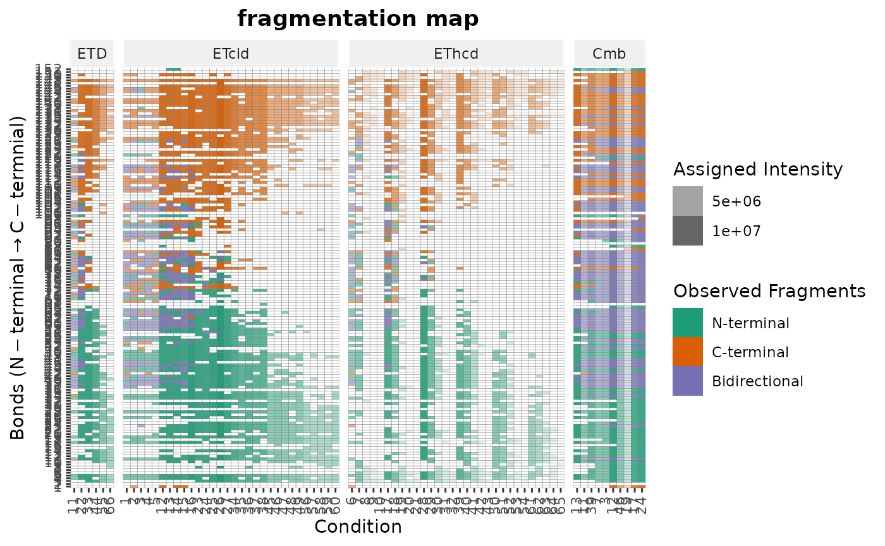

Fragmentation Analysis with topdownr
Pavel V. Shliaha
Department of Biochemistry and Molecular Biology, University of Southern Denmark, Denmark.Sebastian Gibb
Department of Anesthesiology and Intensive Care, University Medicine Greifswald, Germany.Ole Nørregaard Jensen
Department of Biochemistry and Molecular Biology, University of Southern Denmark, Denmark.Source:
vignettes/analysis.Rmd
analysis.RmdAbstract
This vignette describes the fragmentation analysis functionality of thetopdownr package.
Foreword
topdownr is free and open-source software. If you use it, please support the project by citing it in publications:
Sebastian Gibb, Pavel Shliaha and Ole Nørregaard Jensen (2018). topdownr: Investigation of Fragmentation Conditions in Top-Down Proteomics. R package version 1.3.3. https://github.com/sgibb/topdownr/
Questions and bugs
For bugs, typos, suggestions or other questions, please file an issue in our tracking system (https://github.com/sgibb/topdownr/issues) providing as much information as possible, a reproducible example and the output of sessionInfo().
If you don’t have a GitHub account or wish to reach a broader audience for general questions about proteomics analysis using R, you may want to use the Bioconductor support site: https://support.bioconductor.org/.
Introduction/Working with topdownr
Load the package.
Importing Files
Some example files are provided in the topdownrdata package. For a full analysis you need a .fasta file with the protein sequence, the .experiments.csv files containing the method information, the .txt files containing the scan header information and the .mzML files with the deconvoluted spectra.
$csv
[1] ".../20170629_myo/experiments/myo_1211_ETDReagentTarget_1e6_1.experiments.csv.gz"
[2] ".../20170629_myo/experiments/myo_1211_ETDReagentTarget_1e6_2.experiments.csv.gz"
[3] "..."
$fasta
[1] ".../20170629_myo/fasta/myoglobin.fasta.gz"
[2] "..."
$mzML
[1] ".../20170629_myo/mzml/myo_1211_ETDReagentTarget_1e6_1.mzML.gz"
[2] ".../20170629_myo/mzml/myo_1211_ETDReagentTarget_1e6_2.mzML.gz"
[3] "..."
$txt
[1] ".../20170629_myo/header/myo_1211_ETDReagentTarget_1e6_1.txt.gz"
[2] ".../20170629_myo/header/myo_1211_ETDReagentTarget_1e6_2.txt.gz"
[3] "..." All these files have to be in a directory. You could import them via readTopDownFiles. This function has some arguments. The most important ones are the path of the directory containing the files, the protein modification (e.g. initiator methionine removal, "Met-loss"), and adducts (e.g. proton transfer often occurs from c to z-fragment after ETD reaction).
## the mass adduct for a proton
H <- 1.0078250321
myoglobin <- readTopDownFiles(
## directory path
path = topdownrdata::topDownDataPath("myoglobin"),
## fragmentation types
type = c("a", "b", "c", "x", "y", "z"),
## adducts (add -H/H to c/z and name
## them cmH/zpH (c minus H, z plus H)
adducts = data.frame(
mass=c(-H, H),
to=c("c", "z"),
name=c("cmH", "zpH")),
## initiator methionine removal
modifications = "Met-loss",
## don't use neutral loss
neutralLoss = NULL,
## tolerance for fragment matching
tolerance = 5e-6
)## Warning in FUN(X[[i]], ...): 61 FilterString entries modified because of
## duplicated ID for different conditions.## Warning in FUN(X[[i]], ...): 63 FilterString entries modified because of
## duplicated ID for different conditions.## Warning in FUN(X[[i]], ...): 53 FilterString entries modified because of
## duplicated ID for different conditions.## Warning in FUN(X[[i]], ...): 55 FilterString entries modified because of
## duplicated ID for different conditions.## Warning in FUN(X[[i]], ...): 50 FilterString entries modified because of
## duplicated ID for different conditions.
## Warning in FUN(X[[i]], ...): 50 FilterString entries modified because of
## duplicated ID for different conditions.## Warning in FUN(X[[i]], ...): ID in FilterString are not sorted in ascending
## order. Introduce own condition ID via 'cumsum'.
## Warning in FUN(X[[i]], ...): ID in FilterString are not sorted in ascending
## order. Introduce own condition ID via 'cumsum'.## TopDownSet object (7.12 Mb)
## - - - Protein data - - -
## Amino acid sequence (153): GLSDGEWQQVLNVWGKVEADIAG...MTKALELFRNDIAAKYKELGFQG
## Mass : 16922.95
## Modifications (1): Met-loss
## - - - Fragment data - - -
## Number of theoretical fragments: 1216
## Theoretical fragment types (6): a, b, c, x, y, z
## Theoretical mass range: [30.03;16910.93]
## - - - Condition data - - -
## Number of conditions: 1852
## Number of scans: 5882
## Condition variables (61): File, Scan, ..., Sample, MedianIonInjectionTimeMs
## - - - Intensity data - - -
## Size of array: 1216x5882 (5.15% != 0)
## Number of matched fragments: 368296
## Intensity range: [87.61;10704001.00]
## - - - Processing information - - -
## [2018-10-16 20:53:55] 368296 fragments [1216;5882] matched (tolerance: 5 ppm, strategies ion/fragment: remove/remove).
## [2018-10-16 20:53:57] Condition names updated based on: Mz, AgcTarget, EtdReagentTarget, EtdActivation, CidActivation, HcdActivation. Order of conditions changed. 1852 conditions.
## [2018-10-16 20:53:58] Recalculate median injection time based on: Mz, AgcTarget.
The TopDownSet Anatomy
The assembled object is an TopDownSet object. Briefly it is composed of three interconnected tables:
-
rowViews/fragment data: holds the information on the type of fragments, their modifications and adducts. -
colData/condition data: contains the corresponding fragmentation condition for every spectrum. -
assayData: contains the intensity of assigned fragments.

TopDownSet anatomy, image adopted from (Morgan et al. 2017).
Technical Details
This section explains the implementation details of the TopDownSet class. It is not necessary to understand everything written here to use topdownr for the analysis of fragmentation data.
The TopDownSet contains the following components: Fragment data, Condition data, Assay data.
Fragment data
## FragmentViews on a 153-letter sequence:
## GLSDGEWQQVLNVWGKVEADIAGHGQEVLIRLFTG...HPGDFGADAQGAMTKALELFRNDIAAKYKELGFQG
## Mass:
## 16922.95406
## Modifications:
## Met-loss
## Views:
## start end width mass name type z
## [1] 1 1 1 30.03 a1 a 1 [G]
## [2] 1 1 1 58.03 b1 b 1 [G]
## [3] 1 1 1 59.01 z1 z 1 [G]
## [4] 1 1 1 60.02 zpH1 z 1 [G]
## [5] 1 1 1 74.05 cmH1 c 1 [G]
## ... ... ... ... ... ... ... ... ...
## [1212] 2 153 152 16868.93 zpH152 z 1 [LSDGEWQQVLN...AAKYKELGFQG]
## [1213] 1 152 152 16882.96 cmH152 c 1 [GLSDGEWQQVL...IAAKYKELGFQ]
## [1214] 1 152 152 16883.97 c152 c 1 [GLSDGEWQQVL...IAAKYKELGFQ]
## [1215] 2 153 152 16884.95 y152 y 1 [LSDGEWQQVLN...AAKYKELGFQG]
## [1216] 2 153 152 16910.93 x152 x 1 [LSDGEWQQVLN...AAKYKELGFQG]The fragmentation data are represented by an FragmentViews object that is an overloaded XStringViews object. It contains one AAString (the protein sequence) and an IRanges object that stores the start, end (and width) values of the fragments. Additionally it has a DataFrame for the mass, type and z information of each fragment.
Condition data
## DataFrame with 5882 rows and 5 columns
## File
## <Rle>
## C0707.30_1.0e+05_1.0e+06_02.50_07_00_1 myo_707_ETDReagentTarget_1e6_1
## C0707.30_1.0e+05_1.0e+06_02.50_07_00_2 myo_707_ETDReagentTarget_1e6_1
## C0707.30_1.0e+05_1.0e+06_02.50_07_00_3 myo_707_ETDReagentTarget_1e6_2
## C0707.30_1.0e+05_1.0e+06_02.50_07_00_4 myo_707_ETDReagentTarget_1e6_2
## C0707.30_1.0e+05_1.0e+06_02.50_14_00_1 myo_707_ETDReagentTarget_1e6_1
## ... ...
## C1211.70_1.0e+06_0.0e+00_00.00_00_35_07 myo_1211_ETDReagentTarget_1e7_2
## C1211.70_1.0e+06_0.0e+00_00.00_00_35_08 myo_1211_ETDReagentTarget_5e6_1
## C1211.70_1.0e+06_0.0e+00_00.00_00_35_09 myo_1211_ETDReagentTarget_5e6_1
## C1211.70_1.0e+06_0.0e+00_00.00_00_35_10 myo_1211_ETDReagentTarget_5e6_2
## C1211.70_1.0e+06_0.0e+00_00.00_00_35_11 myo_1211_ETDReagentTarget_5e6_2
## Scan SpectrumIndex PeaksCount
## <numeric> <integer> <integer>
## C0707.30_1.0e+05_1.0e+06_02.50_07_00_1 33 22 161
## C0707.30_1.0e+05_1.0e+06_02.50_07_00_2 34 23 175
## C0707.30_1.0e+05_1.0e+06_02.50_07_00_3 33 23 180
## C0707.30_1.0e+05_1.0e+06_02.50_07_00_4 34 24 171
## C0707.30_1.0e+05_1.0e+06_02.50_14_00_1 36 25 172
## ... ... ... ...
## C1211.70_1.0e+06_0.0e+00_00.00_00_35_07 223 203 213
## C1211.70_1.0e+06_0.0e+00_00.00_00_35_08 221 202 250
## C1211.70_1.0e+06_0.0e+00_00.00_00_35_09 222 203 145
## C1211.70_1.0e+06_0.0e+00_00.00_00_35_10 223 203 207
## C1211.70_1.0e+06_0.0e+00_00.00_00_35_11 224 204 158
## TotIonCurrent
## <numeric>
## C0707.30_1.0e+05_1.0e+06_02.50_07_00_1 27224936.7177734
## C0707.30_1.0e+05_1.0e+06_02.50_07_00_2 29167765.3955078
## C0707.30_1.0e+05_1.0e+06_02.50_07_00_3 26132872.484375
## C0707.30_1.0e+05_1.0e+06_02.50_07_00_4 25475501.0371094
## C0707.30_1.0e+05_1.0e+06_02.50_14_00_1 27347105.4853516
## ... ...
## C1211.70_1.0e+06_0.0e+00_00.00_00_35_07 2566120.42312622
## C1211.70_1.0e+06_0.0e+00_00.00_00_35_08 2348707.19299316
## C1211.70_1.0e+06_0.0e+00_00.00_00_35_09 2305899.88635254
## C1211.70_1.0e+06_0.0e+00_00.00_00_35_10 2262800.11270142
## C1211.70_1.0e+06_0.0e+00_00.00_00_35_11 2212188.7298584Condition data is a DataFrame that contains the combined header information for each MS run (combined from method (.experiments.csv files)/scan header (.txt files) table and metadata from the .mzML files).
Assay data
## 10 x 10 sparse Matrix of class "dgCMatrix"## [[ suppressing 10 column names 'C0707.30_1.0e+05_1.0e+06_02.50_07_00_1', 'C0707.30_1.0e+05_1.0e+06_02.50_07_00_2', 'C0707.30_1.0e+05_1.0e+06_02.50_07_00_3' ... ]]##
## z26 . . . . . . .
## zpH26 491328.4 446301.1 407389.1 473200.9 470679.3 493244.8 390025.8
## y26 . . . . . . .
## b27 . . . . . . .
## cmH27 . . . . . . .
## c27 . . . . . . .
## x26 . . . . . . .
## z27 . . . . . . .
## zpH27 534307.6 534135.1 434296.8 436866.2 550887.3 513038.8 460476.4
## y27 . . . . . . .
##
## z26 . . .
## zpH26 389430.25 496551.3 554295.7
## y26 23648.63 . .
## b27 . . .
## cmH27 . . .
## c27 . . .
## x26 . . .
## z27 . . .
## zpH27 456524.97 602207.0 579989.8
## y27 . . .Assay data is a sparseMatrix from the Matrix package (in detail a dgCMatrix) where the rows correspond to the fragments, the columns to the runs/conditions and the entries to the intensity values. A sparseMatrix is similar to the classic matrix in R but stores just the values that are different from zero.
Subsetting a TopDownSet
A TopDownSet could be subsetted by the fragment and the condition data.
## TopDownSet object (3.40 Mb)
## - - - Protein data - - -
## Amino acid sequence (153): GLSDGEWQQVLNVWGKVEADIAG...MTKALELFRNDIAAKYKELGFQG
## Mass : 16922.95
## Modifications (1): Met-loss
## - - - Fragment data - - -
## Number of theoretical fragments: 100
## Theoretical fragment types (6): a, b, c, x, y, z
## Theoretical mass range: [30.03;1426.70]
## - - - Condition data - - -
## Number of conditions: 1852
## Number of scans: 5882
## Condition variables (61): File, Scan, ..., Sample, MedianIonInjectionTimeMs
## - - - Intensity data - - -
## Size of array: 100x5882 (9.68% != 0)
## Number of matched fragments: 56955
## Intensity range: [105.70;1076768.00]
## - - - Processing information - - -
## [2018-10-16 20:53:55] 368296 fragments [1216;5882] matched (tolerance: 5 ppm, strategies ion/fragment: remove/remove).
## [2018-10-16 20:53:57] Condition names updated based on: Mz, AgcTarget, EtdReagentTarget, EtdActivation, CidActivation, HcdActivation. Order of conditions changed. 1852 conditions.
## [2018-10-16 20:53:58] Recalculate median injection time based on: Mz, AgcTarget.
## [2018-10-16 20:53:58] Subsetted 368296 fragments [1216;5882] to 56955 fragments [100;5882].## TopDownSet object (4.35 Mb)
## - - - Protein data - - -
## Amino acid sequence (153): GLSDGEWQQVLNVWGKVEADIAG...MTKALELFRNDIAAKYKELGFQG
## Mass : 16922.95
## Modifications (1): Met-loss
## - - - Fragment data - - -
## Number of theoretical fragments: 304
## Theoretical fragment types (1): c
## Theoretical mass range: [74.05;16883.97]
## - - - Condition data - - -
## Number of conditions: 1852
## Number of scans: 5882
## Condition variables (61): File, Scan, ..., Sample, MedianIonInjectionTimeMs
## - - - Intensity data - - -
## Size of array: 304x5882 (7.69% != 0)
## Number of matched fragments: 137461
## Intensity range: [87.61;1203763.75]
## - - - Processing information - - -
## [2018-10-16 20:53:55] 368296 fragments [1216;5882] matched (tolerance: 5 ppm, strategies ion/fragment: remove/remove).
## [2018-10-16 20:53:57] Condition names updated based on: Mz, AgcTarget, EtdReagentTarget, EtdActivation, CidActivation, HcdActivation. Order of conditions changed. 1852 conditions.
## [2018-10-16 20:53:58] Recalculate median injection time based on: Mz, AgcTarget.
## [2018-10-16 20:53:58] Subsetted 368296 fragments [1216;5882] to 137461 fragments [304;5882].## TopDownSet object (2.73 Mb)
## - - - Protein data - - -
## Amino acid sequence (153): GLSDGEWQQVLNVWGKVEADIAG...MTKALELFRNDIAAKYKELGFQG
## Mass : 16922.95
## Modifications (1): Met-loss
## - - - Fragment data - - -
## Number of theoretical fragments: 1
## Theoretical fragment types (1): c
## Theoretical mass range: [11085.96;11085.96]
## - - - Condition data - - -
## Number of conditions: 1852
## Number of scans: 5882
## Condition variables (61): File, Scan, ..., Sample, MedianIonInjectionTimeMs
## - - - Intensity data - - -
## Size of array: 1x5882 (0.09% != 0)
## Number of matched fragments: 5
## Intensity range: [1276.91;17056.12]
## - - - Processing information - - -
## [2018-10-16 20:53:55] 368296 fragments [1216;5882] matched (tolerance: 5 ppm, strategies ion/fragment: remove/remove).
## [2018-10-16 20:53:57] Condition names updated based on: Mz, AgcTarget, EtdReagentTarget, EtdActivation, CidActivation, HcdActivation. Order of conditions changed. 1852 conditions.
## [2018-10-16 20:53:58] Recalculate median injection time based on: Mz, AgcTarget.
## [2018-10-16 20:53:58] Subsetted 368296 fragments [1216;5882] to 5 fragments [1;5882].# select all "a" and "b" fragments but just the first 100 "c"
myoglobin[c("a", "b", paste0("c", 1:100))]## TopDownSet object (4.43 Mb)
## - - - Protein data - - -
## Amino acid sequence (153): GLSDGEWQQVLNVWGKVEADIAG...MTKALELFRNDIAAKYKELGFQG
## Mass : 16922.95
## Modifications (1): Met-loss
## - - - Fragment data - - -
## Number of theoretical fragments: 404
## Theoretical fragment types (3): a, b, c
## Theoretical mass range: [30.03;16866.94]
## - - - Condition data - - -
## Number of conditions: 1852
## Number of scans: 5882
## Condition variables (61): File, Scan, ..., Sample, MedianIonInjectionTimeMs
## - - - Intensity data - - -
## Size of array: 404x5882 (6.04% != 0)
## Number of matched fragments: 143582
## Intensity range: [87.61;1630533.12]
## - - - Processing information - - -
## [2018-10-16 20:53:55] 368296 fragments [1216;5882] matched (tolerance: 5 ppm, strategies ion/fragment: remove/remove).
## [2018-10-16 20:53:57] Condition names updated based on: Mz, AgcTarget, EtdReagentTarget, EtdActivation, CidActivation, HcdActivation. Order of conditions changed. 1852 conditions.
## [2018-10-16 20:53:58] Recalculate median injection time based on: Mz, AgcTarget.
## [2018-10-16 20:53:58] Subsetted 368296 fragments [1216;5882] to 143582 fragments [404;5882].## TopDownSet object (0.26 Mb)
## - - - Protein data - - -
## Amino acid sequence (153): GLSDGEWQQVLNVWGKVEADIAG...MTKALELFRNDIAAKYKELGFQG
## Mass : 16922.95
## Modifications (1): Met-loss
## - - - Fragment data - - -
## Number of theoretical fragments: 1216
## Theoretical fragment types (6): a, b, c, x, y, z
## Theoretical mass range: [30.03;16910.93]
## - - - Condition data - - -
## Number of conditions: 3
## Number of scans: 10
## Condition variables (61): File, Scan, ..., Sample, MedianIonInjectionTimeMs
## - - - Intensity data - - -
## Size of array: 1216x10 (8.38% != 0)
## Number of matched fragments: 1019
## Intensity range: [7872.05;1036892.19]
## - - - Processing information - - -
## [2018-10-16 20:53:55] 368296 fragments [1216;5882] matched (tolerance: 5 ppm, strategies ion/fragment: remove/remove).
## [2018-10-16 20:53:57] Condition names updated based on: Mz, AgcTarget, EtdReagentTarget, EtdActivation, CidActivation, HcdActivation. Order of conditions changed. 1852 conditions.
## [2018-10-16 20:53:58] Recalculate median injection time based on: Mz, AgcTarget.
## [2018-10-16 20:53:58] Subsetted 368296 fragments [1216;5882] to 1019 fragments [1216;10].# select all conditions from one file
myoglobin[, myoglobin$File == "myo_1211_ETDReagentTarget_1e+06_1"]## TopDownSet object (0.24 Mb)
## - - - Protein data - - -
## Amino acid sequence (153): GLSDGEWQQVLNVWGKVEADIAG...MTKALELFRNDIAAKYKELGFQG
## Mass : 16922.95
## Modifications (1): Met-loss
## - - - Fragment data - - -
## Number of theoretical fragments: 1216
## Theoretical fragment types (6): a, b, c, x, y, z
## Theoretical mass range: [30.03;16910.93]
## - - - Processing information - - -
## [2018-10-16 20:53:55] 368296 fragments [1216;5882] matched (tolerance: 5 ppm, strategies ion/fragment: remove/remove).
## [2018-10-16 20:53:57] Condition names updated based on: Mz, AgcTarget, EtdReagentTarget, EtdActivation, CidActivation, HcdActivation. Order of conditions changed. 1852 conditions.
## [2018-10-16 20:53:58] Recalculate median injection time based on: Mz, AgcTarget.
## [2018-10-16 20:53:58] Subsetted 368296 fragments [1216;5882] to 0 fragments [1216;0].# select all "c" fragments from a single file
myoglobin["c", myoglobin$File == "myo_1211_ETDReagentTarget_1e+06_1"]## TopDownSet object (0.11 Mb)
## - - - Protein data - - -
## Amino acid sequence (153): GLSDGEWQQVLNVWGKVEADIAG...MTKALELFRNDIAAKYKELGFQG
## Mass : 16922.95
## Modifications (1): Met-loss
## - - - Fragment data - - -
## Number of theoretical fragments: 304
## Theoretical fragment types (1): c
## Theoretical mass range: [74.05;16883.97]
## - - - Processing information - - -
## [2018-10-16 20:53:55] 368296 fragments [1216;5882] matched (tolerance: 5 ppm, strategies ion/fragment: remove/remove).
## [2018-10-16 20:53:57] Condition names updated based on: Mz, AgcTarget, EtdReagentTarget, EtdActivation, CidActivation, HcdActivation. Order of conditions changed. 1852 conditions.
## [2018-10-16 20:53:58] Recalculate median injection time based on: Mz, AgcTarget.
## [2018-10-16 20:53:58] Subsetted 368296 fragments [1216;5882] to 0 fragments [304;0].
Plotting a TopDownSet
Each condition represents one spectrum. We could plot a single condition interactively or all spectra into a pdf file (or any other R device that supports multiple pages/plots).
## [[1]]
## # example to plot the first ten conditions into a pdf
## # (not evaluated in the vignette)
## pdf("topdown-conditions.pdf", paper="a4r", width=12)
## plot(myoglobin[, 1:10])
## dev.off()plot returns a list (an item per condition) of ggplot objects which could further modified or investigated interactively by calling plotly::ggplotly().
Fragmentation Data Analysis of Myoglobin
We follow the following workflow:

topdownr workflow
We use the example data loaded in Importing Files.
The data contains several replicates for each fragmentation condition. Before aggregation can be performed we need to remove scans with inadequate injection times and fragments with low intensity or poor intensity reproducibility.
Filter Conditions on Injection Times
Injection times should be consistent for a particular m/z and particular AGC target. High or low injection times indicate problems with on-the-flight AGC calculation or spray instability for a particular scan. Hence the topdownr automatically calculates median injection time for a given m/z and AGC target combination. The user can choose to remove all scans that deviate more than a certain amount from the corresponding median and/or choose to keep N scans with the lowest deviation from the median for every condition.
Here we show an example of such filtering and the effect on the distribution of injection times.
injTimeBefore <- colData(myoglobin)
injTimeBefore$Status <- "before filtering"
## filtering on max deviation and just keep the
## 2 technical replicates per condition with the
## lowest deviation
myoglobin <- filterInjectionTime(
myoglobin,
maxDeviation = log2(3),
keepTopN = 2
)
myoglobin## TopDownSet object (4.98 Mb)
## - - - Protein data - - -
## Amino acid sequence (153): GLSDGEWQQVLNVWGKVEADIAG...MTKALELFRNDIAAKYKELGFQG
## Mass : 16922.95
## Modifications (1): Met-loss
## - - - Fragment data - - -
## Number of theoretical fragments: 1216
## Theoretical fragment types (6): a, b, c, x, y, z
## Theoretical mass range: [30.03;16910.93]
## - - - Condition data - - -
## Number of conditions: 1852
## Number of scans: 3696
## Condition variables (61): File, Scan, ..., Sample, MedianIonInjectionTimeMs
## - - - Intensity data - - -
## Size of array: 1216x3696 (5.63% != 0)
## Number of matched fragments: 252897
## Intensity range: [109.29;8493567.00]
## - - - Processing information - - -
## [2018-10-16 20:53:55] 368296 fragments [1216;5882] matched (tolerance: 5 ppm, strategies ion/fragment: remove/remove).
## [2018-10-16 20:53:57] Condition names updated based on: Mz, AgcTarget, EtdReagentTarget, EtdActivation, CidActivation, HcdActivation. Order of conditions changed. 1852 conditions.
## [2018-10-16 20:53:58] Recalculate median injection time based on: Mz, AgcTarget.
## [2018-10-16 20:54:00] Subsetted 368296 fragments [1216;5882] to 252897 fragments [1216;3696].
## [2018-10-16 20:54:00] 2186 scans filtered with injection time deviation >= 1.58496250072116 or rank >= 3; 252897 fragments [1216;3696].injTimeAfter <- colData(myoglobin)
injTimeAfter$Status <- "after filtering"
injTime <- as.data.frame(rbind(injTimeBefore, injTimeAfter))
## use ggplot for visualisation
library("ggplot2")
ggplot(injTime,
aes(x = as.factor(AgcTarget),
y = IonInjectionTimeMs,
group = AgcTarget)) +
geom_boxplot() +
facet_grid(Status ~ Mz)
Filter Fragments on CV
High CV of intensity for a fragment suggests either fragment contamination by another m/z species or problems with deisotoping and we recommend removing all fragments with CV > 30, as shown below.
## TopDownSet object (4.56 Mb)
## - - - Protein data - - -
## Amino acid sequence (153): GLSDGEWQQVLNVWGKVEADIAG...MTKALELFRNDIAAKYKELGFQG
## Mass : 16922.95
## Modifications (1): Met-loss
## - - - Fragment data - - -
## Number of theoretical fragments: 1216
## Theoretical fragment types (6): a, b, c, x, y, z
## Theoretical mass range: [30.03;16910.93]
## - - - Condition data - - -
## Number of conditions: 1852
## Number of scans: 3696
## Condition variables (61): File, Scan, ..., Sample, MedianIonInjectionTimeMs
## - - - Intensity data - - -
## Size of array: 1216x3696 (4.80% != 0)
## Number of matched fragments: 215569
## Intensity range: [109.29;8493567.00]
## - - - Processing information - - -
## [2018-10-16 20:53:55] 368296 fragments [1216;5882] matched (tolerance: 5 ppm, strategies ion/fragment: remove/remove).
## [2018-10-16 20:53:57] Condition names updated based on: Mz, AgcTarget, EtdReagentTarget, EtdActivation, CidActivation, HcdActivation. Order of conditions changed. 1852 conditions.
## [2018-10-16 20:53:58] Recalculate median injection time based on: Mz, AgcTarget.
## [2018-10-16 20:54:00] Subsetted 368296 fragments [1216;5882] to 252897 fragments [1216;3696].
## [2018-10-16 20:54:00] 2186 scans filtered with injection time deviation >= 1.58496250072116 or rank >= 3; 252897 fragments [1216;3696].
## [2018-10-16 20:54:03] 37328 fragments with CV > 30% filtered; 215569 fragments [1216;3696].Filter Fragments on Intensity
When optimizing protein fragmentation we also want to focus on the most intense fragments, hence we recommend removing all low intensity fragments from analysis.
Low intensity is defined relatively to the most intense observation for this fragment (i.e. relatively to the maximum value in an assayData row). In the example below all intensity values, which have less than 10% intensity of the highest intensity to their corresponding fragment (in their corresponding row) are removed.
## TopDownSet object (3.70 Mb)
## - - - Protein data - - -
## Amino acid sequence (153): GLSDGEWQQVLNVWGKVEADIAG...MTKALELFRNDIAAKYKELGFQG
## Mass : 16922.95
## Modifications (1): Met-loss
## - - - Fragment data - - -
## Number of theoretical fragments: 1216
## Theoretical fragment types (6): a, b, c, x, y, z
## Theoretical mass range: [30.03;16910.93]
## - - - Condition data - - -
## Number of conditions: 1852
## Number of scans: 3696
## Condition variables (61): File, Scan, ..., Sample, MedianIonInjectionTimeMs
## - - - Intensity data - - -
## Size of array: 1216x3696 (3.13% != 0)
## Number of matched fragments: 140483
## Intensity range: [219.52;8493567.00]
## - - - Processing information - - -
## [2018-10-16 20:53:55] 368296 fragments [1216;5882] matched (tolerance: 5 ppm, strategies ion/fragment: remove/remove).
## [2018-10-16 20:53:57] Condition names updated based on: Mz, AgcTarget, EtdReagentTarget, EtdActivation, CidActivation, HcdActivation. Order of conditions changed. 1852 conditions.
## [2018-10-16 20:53:58] Recalculate median injection time based on: Mz, AgcTarget.
## [2018-10-16 20:54:00] Subsetted 368296 fragments [1216;5882] to 252897 fragments [1216;3696].
## [2018-10-16 20:54:00] 2186 scans filtered with injection time deviation >= 1.58496250072116 or rank >= 3; 252897 fragments [1216;3696].
## [2018-10-16 20:54:03] 37328 fragments with CV > 30% filtered; 215569 fragments [1216;3696].
## [2018-10-16 20:54:03] 75086 intensity values < 0.1 (relative) filtered; 140483 fragments [1216;3696].Data Aggregation
The next step of analysis is aggregating technical replicates of fragmentation conditions (columns of assayData).
## TopDownSet object (2.18 Mb)
## - - - Protein data - - -
## Amino acid sequence (153): GLSDGEWQQVLNVWGKVEADIAG...MTKALELFRNDIAAKYKELGFQG
## Mass : 16922.95
## Modifications (1): Met-loss
## - - - Fragment data - - -
## Number of theoretical fragments: 1216
## Theoretical fragment types (6): a, b, c, x, y, z
## Theoretical mass range: [30.03;16910.93]
## - - - Condition data - - -
## Number of conditions: 1852
## Number of scans: 1852
## Condition variables (61): File, Scan, ..., Sample, MedianIonInjectionTimeMs
## - - - Intensity data - - -
## Size of array: 1216x1852 (3.96% != 0)
## Number of matched fragments: 89230
## Intensity range: [219.52;8492743.50]
## - - - Processing information - - -
## [2018-10-16 20:53:55] 368296 fragments [1216;5882] matched (tolerance: 5 ppm, strategies ion/fragment: remove/remove).
## [2018-10-16 20:53:57] Condition names updated based on: Mz, AgcTarget, EtdReagentTarget, EtdActivation, CidActivation, HcdActivation. Order of conditions changed. 1852 conditions.
## [2018-10-16 20:53:58] Recalculate median injection time based on: Mz, AgcTarget.
## [2018-10-16 20:54:00] Subsetted 368296 fragments [1216;5882] to 252897 fragments [1216;3696].
## [2018-10-16 20:54:00] 2186 scans filtered with injection time deviation >= 1.58496250072116 or rank >= 3; 252897 fragments [1216;3696].
## [2018-10-16 20:54:03] 37328 fragments with CV > 30% filtered; 215569 fragments [1216;3696].
## [2018-10-16 20:54:03] 75086 intensity values < 0.1 (relative) filtered; 140483 fragments [1216;3696].
## [2018-10-16 20:54:05] Aggregated 140483 fragments [1216;3696] to 89230 fragments [1216;1852].Random Forest
To examine which of the features (fragmentation parameters) have the highest overall impact for a protein we perform random forest machine learning using the ranger (Wright and Ziegler 2017) R-package.
Before we compute some fragmentation statistics (number of assigned fragments, total assigned intensity, etc.).
## Fragments Total Min Q1 Median Mean Q3 Max
## 1 114 20287547 15477.93 50676.35 117379.4 16683.84 284206.6 889160.9
## 2 112 20647046 9950.82 52033.36 130829.6 16979.48 280873.9 880548.7
## 3 107 21156793 7872.05 51000.28 137816.3 17398.68 299479.5 945866.1
## 4 112 20148236 13521.25 50698.44 118552.1 16569.27 280191.6 874603.0
## 5 113 19598593 11322.55 53494.00 113005.6 16117.26 272462.7 882041.0
## 6 110 19913901 15506.45 65573.98 119684.7 16376.56 265715.7 950459.8## number of fragments
nFragments <- summary(myoglobin)$Fragments
## features of interest
foi <- c(
"AgcTarget",
"EtdReagentTarget",
"EtdActivation",
"CidActivation",
"HcdActivation",
"Charge"
)
rfTable <- as.data.frame(colData(myoglobin)[foi])
## set NA to zero
rfTable[is.na(rfTable)] <- 0
rfTable <- as.data.frame(cbind(
scale(rfTable),
Fragments = nFragments
))
featureImportance <- ranger(
Fragments ~ .,
data = rfTable,
importance = "impurity"
)$variable.importance
barplot(
featureImportance/sum(featureImportance),
cex.names = 0.7
)
The two parameters having the lowest overall impact in the myoglobin dataset across all conditions are ETD reagent target (EtdReagentTarget), CID activation energy (CidActivation) and AGC target (AgcTarget), while ETD reaction energy (EtdActivation) and HCD activation energy (HcdActivation) demonstrate the highest overall impact.
Combining Fragmentation Conditions to Maximize Coverage
The purpose of topdownr is to investigate how maximum coverage with high intensity fragments can be achieved with minimal instrument time. Therefore topdownr reports the best combination of fragmentation conditions (with user specified number of conditions) that covers the highest number of different bonds.
Different fragmentation methods predominantly generate different types of fragments (e.g. b and y for HCD and CID, c and z for ETD, a and x for UVPD).
However N-terminal (a, b and c) as well as C-terminal (x, y and z) fragments originating from the same bond, cover the same number of amino acid sidechains. Hence different types of N-terminal (a, b and c) or C-terminal (x, y and z) fragments from the same bond add no extra sequence information.
Before we compute combinations all the fragments are converted to either N- or C-terminal, as shown in the image below.

Schema of N-/C-terminal fragments or bidirectional
In topdownr we convert the TopDownSet into an NCBSet object (N-terminal/C-terminal/Bidirectional).
## NCBSet object (2.00 Mb)
## - - - Protein data - - -
## Amino acid sequence (153): GLSDGEWQQVLNVWGKVEADIAG...MTKALELFRNDIAAKYKELGFQG
## - - - Fragment data - - -
## Number of N-terminal fragments: 30592
## Number of C-terminal fragments: 29456
## Number of N- and C-terminal fragments: 9506
## - - - Condition data - - -
## Number of conditions: 1852
## Number of scans: 1852
## Condition variables (62): File, Scan, ..., MedianIonInjectionTimeMs, AssignedIntensity
## - - - Assay data - - -
## Size of array: 152x1852 (24.71% != 0)
## - - - Processing information - - -
## [2018-10-16 20:53:55] 368296 fragments [1216;5882] matched (tolerance: 5 ppm, strategies ion/fragment: remove/remove).
## [2018-10-16 20:53:57] Condition names updated based on: Mz, AgcTarget, EtdReagentTarget, EtdActivation, CidActivation, HcdActivation. Order of conditions changed. 1852 conditions.
## [2018-10-16 20:53:58] Recalculate median injection time based on: Mz, AgcTarget.
## [2018-10-16 20:54:00] Subsetted 368296 fragments [1216;5882] to 252897 fragments [1216;3696].
## [2018-10-16 20:54:00] 2186 scans filtered with injection time deviation >= 1.58496250072116 or rank >= 3; 252897 fragments [1216;3696].
## [2018-10-16 20:54:03] 37328 fragments with CV > 30% filtered; 215569 fragments [1216;3696].
## [2018-10-16 20:54:03] 75086 intensity values < 0.1 (relative) filtered; 140483 fragments [1216;3696].
## [2018-10-16 20:54:05] Aggregated 140483 fragments [1216;3696] to 89230 fragments [1216;1852].
## [2018-10-16 20:54:07] Coerced TopDownSet into an NCBSet object; 69554 fragments [152;1852].An NCBSet is very similar to a TopDownSet but instead of an FragmentViews the rowViews are an XStringViews for the former. Another difference is that the NCBSet has one row per bond instead one row per fragment. Also the assayData contains no intensity information but a 1 for an N-terminal, a 2 for a C-terminal and a 3 for bidirectional fragments.
The NCBSet can be used to select the combination of conditions that provide the best fragment coverage. While computing coverage topdownr awards 1 point for every fragment going from every bond in either N or C directions. This means that bonds covered in both directions increase the score of a condition by 2 points. For the myoglobin fragmentation example we get the following table for the best three conditions:
## Index FragmentsAddedToCombination
## C0893.10_1.0e+06_1.0e+06_05.00_14_00_1 1049 143
## C1211.70_1.0e+05_0.0e+00_00.00_28_00_05 1431 62
## C0707.30_5.0e+05_5.0e+06_02.50_07_00_1 275 28
## BondsAddedToCombination
## C0893.10_1.0e+06_1.0e+06_05.00_14_00_1 98
## C1211.70_1.0e+05_0.0e+00_00.00_28_00_05 36
## C0707.30_5.0e+05_5.0e+06_02.50_07_00_1 10
## FragmentsInCondition
## C0893.10_1.0e+06_1.0e+06_05.00_14_00_1 143
## C1211.70_1.0e+05_0.0e+00_00.00_28_00_05 108
## C0707.30_5.0e+05_5.0e+06_02.50_07_00_1 132
## BondsInCondition FragmentCoverage
## C0893.10_1.0e+06_1.0e+06_05.00_14_00_1 98 0.4703947
## C1211.70_1.0e+05_0.0e+00_00.00_28_00_05 82 0.6743421
## C0707.30_5.0e+05_5.0e+06_02.50_07_00_1 97 0.7664474
## BondCoverage
## C0893.10_1.0e+06_1.0e+06_05.00_14_00_1 0.6447368
## C1211.70_1.0e+05_0.0e+00_00.00_28_00_05 0.8815789
## C0707.30_5.0e+05_5.0e+06_02.50_07_00_1 0.9473684Building a Fragmentation Map
Fragmentation maps allow visualising the type of fragments produced by fragmentation conditions and their overall distribution along the protein backbone. It also illustrates how the combination of conditions results in a cumulative increase in fragment coverage. Shown below is a fragmentation map for myoglobin m/z 707.3, AGC target 1e6 and ETD reagent target of 1e7 for ETD (plotting more conditions is not practical for the vignette):
sel <-
myoglobinNcb$Mz == 707.3 &
myoglobinNcb$AgcTarget == 1e6 &
(myoglobinNcb$EtdReagentTarget == 1e7 &
!is.na(myoglobinNcb$EtdReagentTarget))
myoglobinNcbSub <- myoglobinNcb[, sel]
fragmentationMap(
myoglobinNcbSub,
nCombinations = 10,
labels = seq_len(ncol(myoglobinNcbSub))
)
Session Information
## R version 3.5.1 (2017-01-27)
## Platform: x86_64-pc-linux-gnu (64-bit)
## Running under: Ubuntu 14.04.5 LTS
##
## Matrix products: default
## BLAS: /home/travis/R-bin/lib/R/lib/libRblas.so
## LAPACK: /home/travis/R-bin/lib/R/lib/libRlapack.so
##
## locale:
## [1] LC_CTYPE=en_US.UTF-8 LC_NUMERIC=C
## [3] LC_TIME=en_US.UTF-8 LC_COLLATE=en_US.UTF-8
## [5] LC_MONETARY=en_US.UTF-8 LC_MESSAGES=en_US.UTF-8
## [7] LC_PAPER=en_US.UTF-8 LC_NAME=C
## [9] LC_ADDRESS=C LC_TELEPHONE=C
## [11] LC_MEASUREMENT=en_US.UTF-8 LC_IDENTIFICATION=C
##
## attached base packages:
## [1] stats4 parallel stats graphics grDevices utils datasets
## [8] methods base
##
## other attached packages:
## [1] ggplot2_3.0.0 ranger_0.10.1 topdownrdata_1.1.1
## [4] topdownr_1.3.3 Biostrings_2.49.2 XVector_0.21.4
## [7] IRanges_2.15.18 S4Vectors_0.19.22 ProtGenerics_1.13.0
## [10] BiocGenerics_0.27.1 BiocStyle_2.9.6
##
## loaded via a namespace (and not attached):
## [1] Rcpp_0.12.19 lattice_0.20-35 assertthat_0.2.0
## [4] rprojroot_1.3-2 digest_0.6.18 foreach_1.4.4
## [7] R6_2.3.0 plyr_1.8.4 backports_1.1.2
## [10] mzID_1.19.0 evaluate_0.11 highr_0.7
## [13] pillar_1.3.0 zlibbioc_1.27.0 rlang_0.2.2
## [16] lazyeval_0.2.1 Matrix_1.2-14 preprocessCore_1.43.0
## [19] rmarkdown_1.10 mzR_2.15.5 pkgdown_1.1.0
## [22] labeling_0.3 desc_1.2.0 BiocParallel_1.15.15
## [25] stringr_1.3.1 munsell_0.5.0 compiler_3.5.1
## [28] xfun_0.3 pcaMethods_1.73.1 htmltools_0.3.6
## [31] tibble_1.4.2 roxygen2_6.1.0 bookdown_0.7
## [34] codetools_0.2-15 XML_3.98-1.16 crayon_1.3.4
## [37] withr_2.1.2 MASS_7.3-50 commonmark_1.5
## [40] grid_3.5.1 gtable_0.2.0 affy_1.59.1
## [43] magrittr_1.5 scales_1.0.0 ncdf4_1.16
## [46] stringi_1.2.4 impute_1.55.0 reshape2_1.4.3
## [49] fs_1.2.6 affyio_1.51.0 doParallel_1.0.14
## [52] limma_3.37.7 xml2_1.2.0 iterators_1.0.10
## [55] tools_3.5.1 Biobase_2.41.2 MSnbase_2.7.8
## [58] yaml_2.2.0 colorspace_1.3-2 BiocManager_1.30.2
## [61] vsn_3.49.1 MALDIquant_1.18 memoise_1.1.0
## [64] knitr_1.20References
Morgan, Martin, Valerie Obenchain, Jim Hester, and Hervé Pagès. 2017. SummarizedExperiment: SummarizedExperiment Container.
Wright, Marvin N., and Andreas Ziegler. 2017. “ranger: A Fast Implementation of Random Forests for High Dimensional Data in C++ and R.” Journal of Statistical Software 77 (1): 1–17. https://doi.org/10.18637/jss.v077.i01.